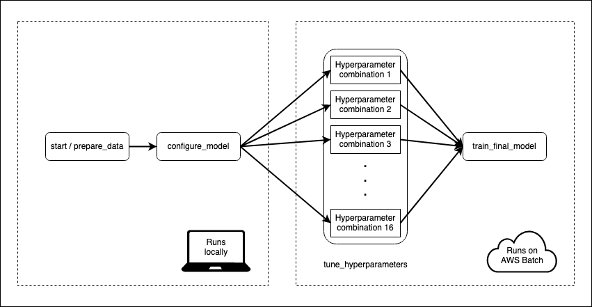

I have a machine learning model that takes some time to train. Data pre-processing and model fitting can take 15–20 minutes. That’s not so bad, but I also want to tune my model to make sure I’m using the best hyper-parameters. With 16 different combinations of hyperparameters and 5-fold cross-validation, my 20 minutes can become a day or more.
Metaflow is an open-source tool from the folks at Netflix that can be used to make this process less painful. It lets me choose which parts of my model training flow I want to execute on the cloud. To speed things up I’m going to ask Metaflow to spin up enough compute resources so that every hyperparameter combination can be evaluated in parallel in separate environments.
The best part is that my flow is pure R code.
I’ll go through the details below, but feel free to skip ahead to the GitHub repository.
My use case is a simple NLP project. I’ll take around 2.5 million rows of Urban Dictionary definitions and train an xgboost model to predict the popularity of a review, which I’m defining here as the sum of up- and down-votes. I can’t say for sure that this model makes any sense or is of any use, but it’s a good toy example.
This data comes to around half a gigabyte, which is small enough for my laptop to handle, but large enough that I can make gains by scaling up or out. The pre-processing steps require tokenising and filtering the text before fitting it to a document-term matrix.
I’m using the tidymodels framework to put it all together. A recipe generated by my custom generate_text_processing_recipe function will handle the pre-processing. A parsnip model object will handle the xgboost modelling, while the tune package will handle hyperparameter tuning, and a workflow will combine everything:
model <- parsnip::boost_tree(
mtry = tune::tune(),
trees = tune::tune(),
tree_depth = tune::tune(),
sample_size = tune::tune()
) %>%
parsnip::set_engine("xgboost", nthread = 4) %>%
parsnip::set_mode("regression")
recipe <- generate_text_processing_recipe(
interactions ~ definition,
self$train,
text_column = definition,
min_times = 0.001
)
workflow <- workflows::workflow() %>%
workflows::add_recipe(recipe) %>%
workflows::add_model(model)Pre-processing and model training has to be done for each fold and for each combination of hyperparameters. With 16 combinations, I’m looking at pre-processing and training 80 models on around 1.6 million rows of data each, with 20% of the data is reserved for evaluating a final model fit.
I’ll be evaluating the following hyperparameters, but I haven’t invested much thought into this. I’m not concerned at all with the final model, just the process of getting there, so please don’t treat these hyperparameters as meaningful in any way.
tidyr::expand_grid(
mtry = c(0.5, 1),
trees = c(300, 500),
tree_depth = c(6, 12),
sample_size = c(0.8, 1.0)
)I define a flow which instructs Metaflow how to train my model. Flows are divided into steps, which can be run either locally or on AWS. Every flow must start with a start step and end with an end step. The start step in this flow loads the data from a CSV and splits it into train and test. The “end” step is a blank, so I’ve omitted it:

Metaflow flow
What I like here is that I start my flow locally using data on my laptop, and then seamlessly move into the cloud for the more computationally intensive steps. I don’t have to deal with uploading anything to a remote datastore, since Metaflow handles all of that stuff behind the scenes. The cloud works best when I don’t have to deal with the cloud myself.
Each step is defined by an r_function, which is a function of a single self argument. self is used to store the state of the execution. My function might set self$x <- 3, and then following steps will be able to access self$x to retrieve its value. All of my r_functions are custom functions stored in my project, so the actual flow code itself looks pretty lean:
metaflow("NLPRMetaflow") %>%
step(
step = "start",
r_function = prepare_data,
next_step = "configure_model"
) %>%
step(
step = "configure_model",
r_function = configure_model,
next_step = "tune_hyperparameters",
foreach = "hyperparameter_indices"
) %>%
step(
step = "tune_hyperparameters",
decorator("batch", memory = 15000, cpu = 3, image = ecr_repository),
r_function = tune_hyperparameters,
next_step = "train_final_model"
) %>%
step(
step = "train_final_model",
join = TRUE,
decorator("batch", memory = 30000, cpu = 3, image = ecr_repository),
r_function = train_final_model,
next_step="end") %>%
step(step = "end")Heads up: step names need to be valid Python variable names. I tripped over this a few times when trying to use hyphens.
The tune_hyperparameters step splits on the various combinations of hyperparameters, with one job/task per hyperparameter combination, all acting in parallel. This is the purpose of foreach = "hyperparameter_indices". The next step has a join = TRUE argument, which tells Metaflow that this step will reconcile the results of the previous split.
Step execution is controlled by decorators. I use a “batch” decorator to tell Metaflow that certain steps are to be executed on the cloud using AWS Batch. I also specify the resources I want to use for the computation, including the Docker image used to execute the step.
Metaflow will use rocker/ml as a default image for executions on the cloud, and this should cover a lot of machine learning use cases. My project, however, uses a Docker image which provides a reproducible environment for model training. It also provides the helper functions that are used by the Metaflow flow in the cloud. The Dockerfile is available in the GitHub repository, but I’ll explain the rough idea below.
I’ve structured my project as an R package called NLPRMetaflow. The dependencies are tracked through the DESCRIPTION file, and also through an renv lockfile. By installing the project as a package in the Docker image I can run library(NLPRMetaflow) and then the functions in the package will be available on every instance spawned by Metaflow.
The Dockerfile is generic enough that it should work with any DESCRIPTION file and renv lock file, subject to some hard-coded version numbers. I start the Dockerfile FROM rocker/r-ver:4.0.3 so that I have an R installation ready to go. Metaflow uses a Python backend, so I need to make available a Python installation with a few necessary modules. Miniconda is a good choice for a minimal Python distribution. I use environment variables to fix the version numbers of the various Python components.
For the R component I first install system dependencies based on the project/package’s DESCRIPTION file. Then I install package dependencies by restoring the renv lockfile. This is made substantially faster by using the pre-compiled binaries kindly provided by the RStudio Package Manager. Finally I install the project/package itself, which ensures that all of my helper functions are available in the cloud.
Once the image is built I need to put it somewhere that AWS can find it. Docker Hub is a good choice, but AWS’s Elastic Container Registry is likely faster as it uses S3. I tag every image with the GIT commit hash (github.sha) so that Metaflow will always use the correct image.
# AWS configuration
aws_region <- "ap-southeast-2"
ecr_repository_name <- "nlprmetaflow"
git_hash <- system("git rev-parse HEAD", intern = TRUE)
ecr_repository <- glue(
"{Sys.getenv('AWS_ACCOUNT_ID')}.dkr.ecr.{aws_region}.amazonaws.com/",
"{ecr_repository_name}:{git_hash}"
)Any image location will work for Metaflow, though, as long as the the AWS resources can download it. Use the image location with the repository, that is, use “docker.io/user/image” rather than “user/image”.
Building and pushing Docker images is boring, so I use a GitHub Actions workflow to do it for me whenever I git push. The workflow authenticates itself to AWS using an IAM role that is restricted to pushing images to AWS Elastic Container Registry. The authentication credentials (my AWS access key ID and secret key) are stored as repository secrets. After authentication the workflow will then build the docker image from my R project/package code, and push it to ECR.
I’ve stored ECR_REPOSITORY as a repository secret here, but that’s just so I can use an identical workflow in different repositories. There’s nothing secret about the repository name, and it could be hard-coded here.
build-and-push-image:
runs-on: ubuntu-20.04
name: build-and-push-image
needs: R-CMD-check
steps:
- name: Checkout repository to package subdirectory
uses: actions/checkout@v2
with:
path: package
- name: Configure AWS credentials
uses: aws-actions/configure-aws-credentials@v1
with:
aws-access-key-id: ${{ secrets.AWS_ACCESS_KEY_ID }}
aws-secret-access-key: ${{ secrets.AWS_SECRET_ACCESS_KEY }}
aws-region: ap-southeast-2
- name: Login to Amazon ECR
id: login-ecr
uses: aws-actions/amazon-ecr-login@v1
- name: Build, tag, and push image to Amazon ECR
env:
ECR_REGISTRY: ${{ steps.login-ecr.outputs.registry }}
ECR_REPOSITORY: ${{ secrets.ECR_REPOSITORY }}
IMAGE_TAG: ${{ github.sha }}
run: |
docker build -t $ECR_REGISTRY/$ECR_REPOSITORY:$IMAGE_TAG package
docker push $ECR_REGISTRY/$ECR_REPOSITORY:$IMAGE_TAGThis job also has a dependency on a standard R CMD check job that will check the package and any unit tests it might contain. If there’s a failure in that job, the image won’t get a chance to build, and I’ll receive an email from GitHub telling me that something has gone wrong.
Metadata’s documentation is comprehensive, and explains the AWS services required to run Metadata flows on the cloud. A CloudFormation template will set the required resources up quickly, or a manual deployment can be used to customise the resources. I chose to manually deploy my cloud resources because I didn’t wish to use the metadata component of Metaflow; this is useful for collaboration, but since it’s just me I wanted to save money by not using Amazon RDS.
The following resources were needed for my setup:
I set everything up on AWS following the Metaflow instructions and ran metaflow configure aws in a terminal to link everything to my local machine. This part of the configuration was mostly painless. I ran into a few bumps with IAM roles: I’d advise caution when AWS offers to create IAM roles on your behalf — if you run into problems, try creating your own roles manually.
Spot instances can be a lot cheaper than on-demand instances, so I set up a compute environment that exclusively uses spot instances. At this point I was no longer following the Metaflow documentation and I was on my own. This was painful.
A compute environment relies on an “allocation strategy” to determine which instances to launch, but the available strategies are opaque. At times I would request a total of 48 vCPUs, but the compute environment would select instances that total 80 vCPUs. However, AWS accounts are limited by default to 64 vCPUs across all running spot instances. I had to request that this limit be increased to 80 on my account, otherwise my jobs would wait until resources were available.
Overall I found the compute environment setup frustrating. Many settings can’t be changed once a compute environment has been created, so I found myself in a trial-and-error loop of creating and deleting environments until a configuration worked. Logs are helpful, if you can find them — issues with a compute environment have log entries in automatically generated EC2 Auto Scaling Groups, at the bottom of a navigation pane, in a different service, under an “activity” tab.
But none of this is Metaflow’s fault! It’s a tangent I went down to save a couple of dollars. I got there in the end.
UPDATE 2020-01-29: The latest version of Metaflow supports AWS Fargate as a compute backend to AWS Batch. I haven’t tried this myself yet, but it looks like an easier (and cheaper) alternative to spot instances. It looks like a Fargate instance supports up to 4 vCPUs and 30GB of memory.
My flow is kept within a function in my project/package. Running the flow is a one-liner: generate_flow() %>% metaflow::run(). Log entries2 across all tasks are printed to the R console, and logs from cloud executions are saved to AWS CloudWatch as well, without any configuration on my behalf.
I give each hyperparameter tuning job 4 CPU cores and 15000MB of memory, with a little more memory for the final model train. xgboost is the only tool in my code that should be using more than 1 core. It takes about 2 hours to evaluate a single combination of hyperparameters. Fortunately, this all happens in parallel, so 16 combinations is still about 2 hours. The whole thing finishes in about 3 hours.
The process to get results back from S3 is a little bit cumbersome, as I have to navigate the Metaflow hierarchy of flow -> run -> step -> task -> artifact, using Python-esque syntax.
flow <- flow_client$new("NLPRMetaflow")
latest_successful_run <- run_client$new(flow, run = flow$latest_successful_run)
final_model_step <- latest_successful_run$step("end")
final_model_task <- final_model_step$task(task_id = 20) # The last task
metrics <- final_model_task$artifact("metrics")
metrics
#> .metric .estimator .estimate
#> rmse standard 9.491624e+02
#> mae standard 1.398124e+02
#> rsq standard 3.258213e-04A root mean squared error of 949. That’s bad. That’s really bad. For context, the average interactions in my whole data set is a little over 100. It’s a terrible model. But I can’t blame Metaflow for my terrible model.
Determining AWS costs requires some advanced divination techniques, but it looks as though I paid around USD 2 to cover a single run using spot instances.
Metaflow is the closest I’ve ever gotten to seeing the promise of the cloud fulfilled — on-demand, scalable resources that exist only as long as needed. Once I got past the AWS hurdles I was able to seamlessly transition my machine learning workflow from my laptop to the cloud halfway through a workflow, with the complexities handled behind the scenes.
The MLOps space is flourishing, and Metaflow ticks the most important boxes that I look for in tools like this:
parsnip integration, I just write code that uses parsnip.There’s a peculiarity with Metaflow in that it struggles to save with tibbles with list-columns, likely due to some restriction of reticulate/Python. These tibbles can appear within a step, but can’t be saved to the self state variable.
This is a problem when using the tidymodels universe. The rsample package uses list-columns for cross-validation folds and the tune package relies on list-columns for its results. I work around this by using a seed to generate the folds so that I can always recreate them. I also use a custom function select_best_hyperparameters function for selecting optimal hyperparameters.
folds <- withr::with_seed(20201225, rsample::vfold_cv(self$train, v = 5))
self$hyperparameter_results <- self$workflow %>%
tune::tune_grid(
resamples = folds,
grid = hyperparameters_to_use
) %>% tune::collect_metrics()
# Later, in the train_final_model step
self$optimal_hyperparameters <- select_best_hyperparameters(
self$collected_hyperparameter_results,
metric = "rmse"
)devtools::session_info()## ─ Session info ───────────────────────────────────────────────────────────────
## setting value
## version R version 4.1.0 (2021-05-18)
## os macOS Big Sur 11.3
## system aarch64, darwin20
## ui X11
## language (EN)
## collate en_AU.UTF-8
## ctype en_AU.UTF-8
## tz Australia/Melbourne
## date 2021-05-30
##
## ─ Packages ───────────────────────────────────────────────────────────────────
## package * version date lib source
## blogdown 1.3 2021-04-14 [1] CRAN (R 4.1.0)
## bookdown 0.22 2021-04-22 [1] CRAN (R 4.1.0)
## bslib 0.2.5.1 2021-05-18 [1] CRAN (R 4.1.0)
## cachem 1.0.4 2021-02-13 [1] CRAN (R 4.1.0)
## callr 3.7.0 2021-04-20 [1] CRAN (R 4.1.0)
## cli 2.5.0 2021-04-26 [1] CRAN (R 4.1.0)
## crayon 1.4.1 2021-02-08 [1] CRAN (R 4.1.0)
## desc 1.3.0 2021-03-05 [1] CRAN (R 4.1.0)
## devtools 2.4.0 2021-04-07 [1] CRAN (R 4.1.0)
## digest 0.6.27 2020-10-24 [1] CRAN (R 4.1.0)
## ellipsis 0.3.2 2021-04-29 [1] CRAN (R 4.1.0)
## evaluate 0.14 2019-05-28 [1] CRAN (R 4.1.0)
## fastmap 1.1.0 2021-01-25 [1] CRAN (R 4.1.0)
## fs 1.5.0 2020-07-31 [1] CRAN (R 4.1.0)
## glue 1.4.2 2020-08-27 [1] CRAN (R 4.1.0)
## htmltools 0.5.1.1 2021-01-22 [1] CRAN (R 4.1.0)
## jquerylib 0.1.4 2021-04-26 [1] CRAN (R 4.1.0)
## jsonlite 1.7.2 2020-12-09 [1] CRAN (R 4.1.0)
## knitr 1.33 2021-04-24 [1] CRAN (R 4.1.0)
## lifecycle 1.0.0 2021-02-15 [1] CRAN (R 4.1.0)
## magrittr 2.0.1 2020-11-17 [1] CRAN (R 4.1.0)
## memoise 2.0.0 2021-01-26 [1] CRAN (R 4.1.0)
## pkgbuild 1.2.0 2020-12-15 [1] CRAN (R 4.1.0)
## pkgload 1.2.1 2021-04-06 [1] CRAN (R 4.1.0)
## prettyunits 1.1.1 2020-01-24 [1] CRAN (R 4.1.0)
## processx 3.5.2 2021-04-30 [1] CRAN (R 4.1.0)
## ps 1.6.0 2021-02-28 [1] CRAN (R 4.1.0)
## purrr 0.3.4 2020-04-17 [1] CRAN (R 4.1.0)
## R6 2.5.0 2020-10-28 [1] CRAN (R 4.1.0)
## remotes 2.3.0 2021-04-01 [1] CRAN (R 4.1.0)
## rlang 0.4.11 2021-04-30 [1] CRAN (R 4.1.0)
## rmarkdown 2.8 2021-05-07 [1] CRAN (R 4.1.0)
## rprojroot 2.0.2 2020-11-15 [1] CRAN (R 4.1.0)
## sass 0.4.0 2021-05-12 [1] CRAN (R 4.1.0)
## sessioninfo 1.1.1 2018-11-05 [1] CRAN (R 4.1.0)
## stringi 1.6.1 2021-05-10 [1] CRAN (R 4.1.0)
## stringr 1.4.0 2019-02-10 [1] CRAN (R 4.1.0)
## testthat 3.0.2 2021-02-14 [1] CRAN (R 4.1.0)
## usethis 2.0.1 2021-02-10 [1] CRAN (R 4.1.0)
## withr 2.4.2 2021-04-18 [1] CRAN (R 4.1.0)
## xfun 0.22 2021-03-11 [1] CRAN (R 4.1.0)
## yaml 2.2.1 2020-02-01 [1] CRAN (R 4.1.0)
##
## [1] /Library/Frameworks/R.framework/Versions/4.1-arm64/Resources/libraryI put a lifecycle rule on my bucket so that all objects are deleted after 24 hours. I save money, but Metaflow has a shorter memory.↩︎
I started to use a proper logging package, but I noticed that timestamps and task details were automatically prepended by Metaflow. It suffices to log with message or print.↩︎